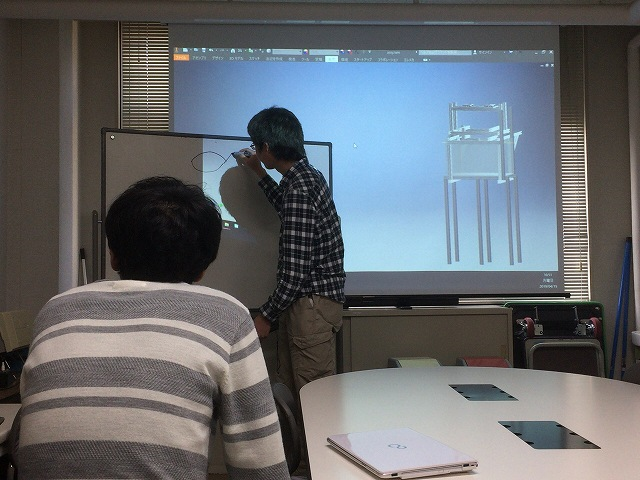
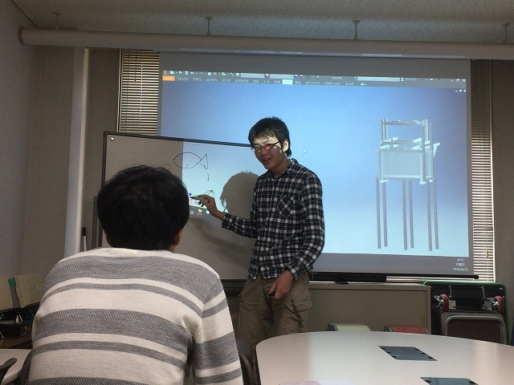
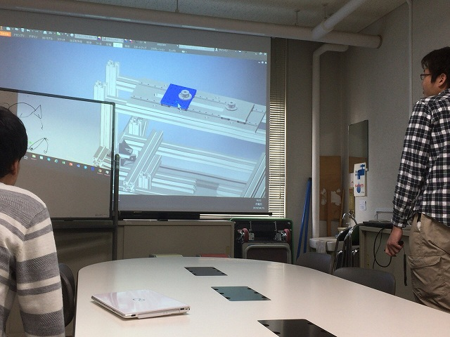
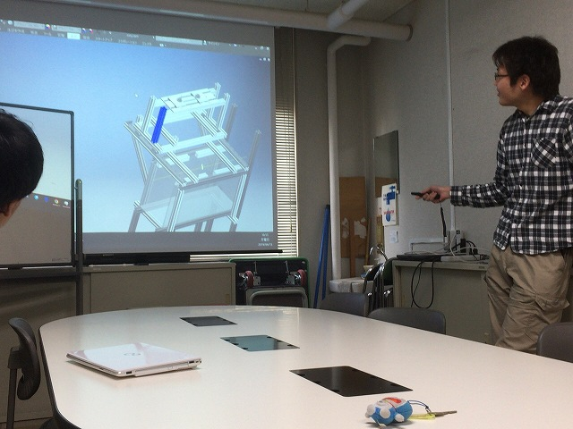
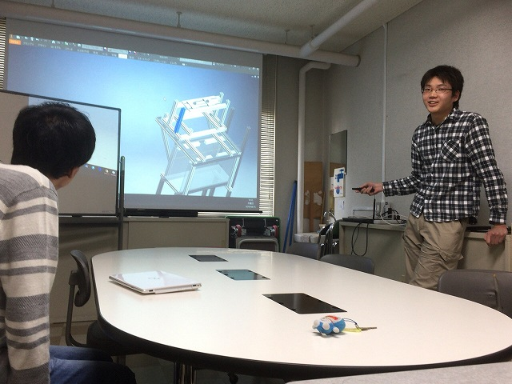

| ・ デザインレビュー (H31.04.15) | |||
M1のI田さんが、B4の時に製作した揚抗計周りの改良前デザインレビューをみんなでしました。干渉し合う揚抗計とステレオカメラシステムの作業効率をどうあげるかという点が要点。 カラクリの説明の後は、みんながいろんな想定を挙げていって対処できる設計になっているかどうか検討します。今回のように精度が必要な場合は、 工場の方とも事前に加工できるかどうかも説明する必要があります。専門知識を介した周囲とのコミュ力が大事。 |
|||
|

ホワイトボードも使って |

機能の説明 | ||
|

上のところがスライドするので、今後の拡張性も高い |

そんなに精度出るんですか？ | ||
|

赤井さんと相談してOKでした |
|||